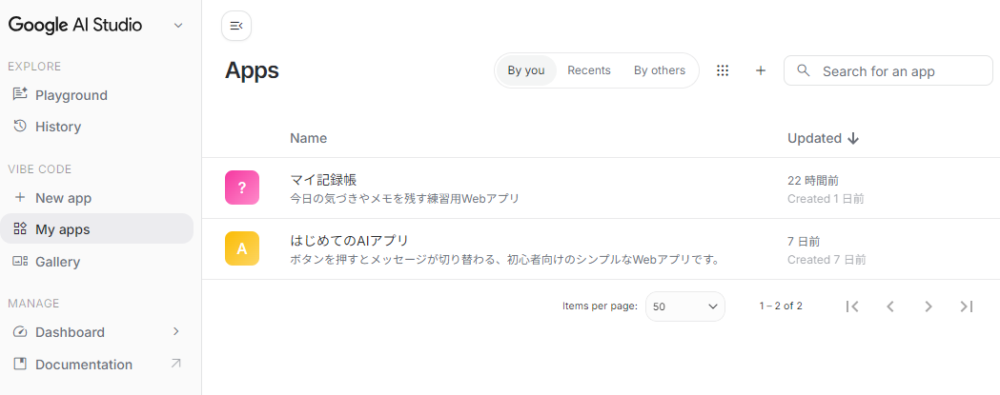
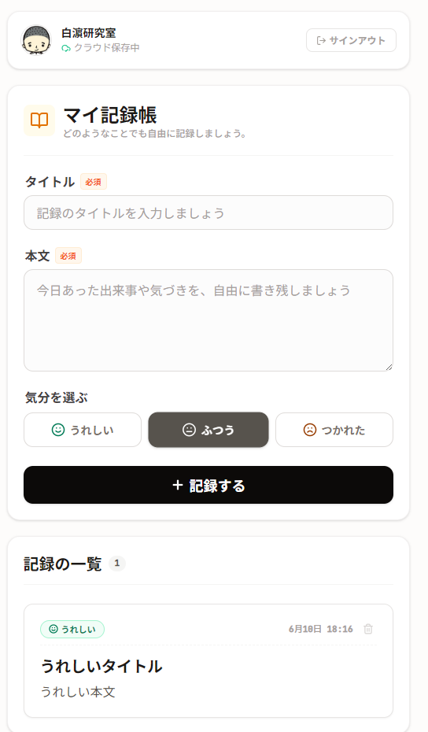
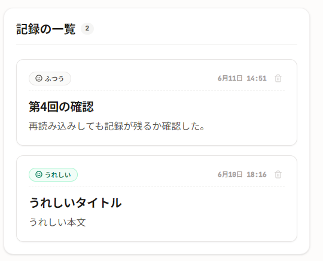
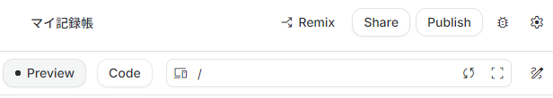
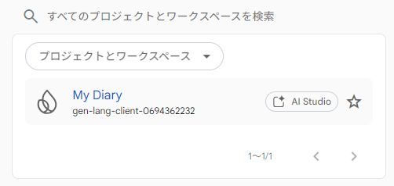
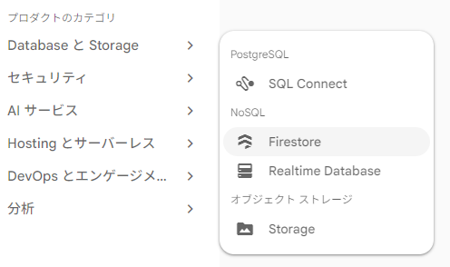
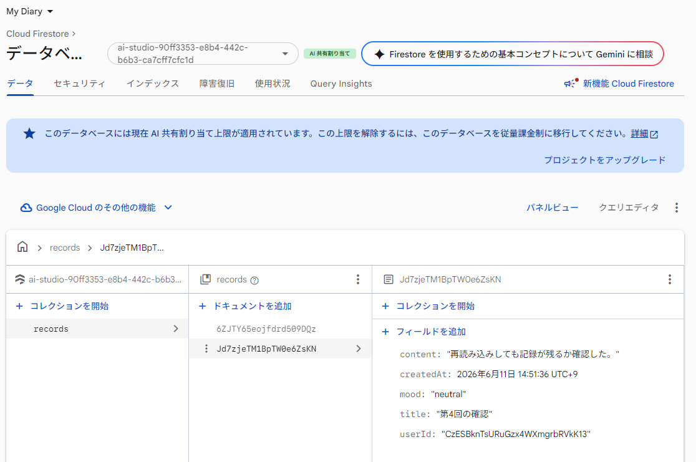
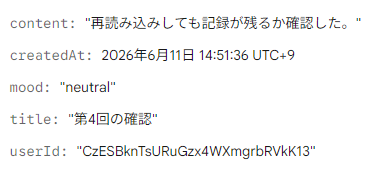
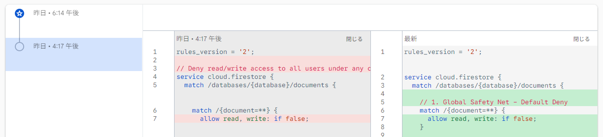

講師：白濵 成希
下関市立大学 データサイエンス学部
保存した記録を、自分で点検できるようになる。
確認すること
画面にカードが出ただけでは、まだ分かりません。
誰が使っているかを確認する仕組み
クラウド上に記録を置く箱
誰が読めるか・書けるかを決めるルール


架空のサンプルだけを使います。
タイトル: 第4回の確認
本文: 再読み込みしても記録が残るか確認した。
気分: ふつう
実名・勤務先・顧客情報は入れません。


Firebaseの設定とデータを確認する画面
見る場所
https://console.firebase.google.com/



「プロジェクトをアップグレード」は押さない
今回のアプリでは、記録はここに入ります。
records
└─ 記録1件ごとのドキュメント
├─ title
├─ content
├─ mood
├─ createdAt
└─ userId

確認するフィールド
content, createAt, mood, title, userID`

見るところは3つだけです。
records だけにルールを付ける
allow read, write: if false;
長いルールの中で、今日見るのはここだけです。
match /records/{recordId} {
allow read: if isSignedIn()
&& resource.data.userId == request.auth.uid;
allow create: if isEmailVerified()
&& isValidRecord(request.resource.data);
}
isSignedIn()
中では、次のような確認をしています。
request.auth != null
これは、 Googleログイン済みならOK という意味です。
resource.data.userId == request.auth.uid
保存済みの userId = 今ログインしている人のID
のときだけ読む、という意味です。
保存時も、userId を確認します。
data.userId == request.auth.uid
他人の userId では保存できない ということです。
これは使いません。
allow read, write: if true;
これは、 誰でも読める・誰でも書ける に近い危険な設定です。
講師の指示がある場合のみ確認します。
Googleログイン後に「記録する」を押してもFirestoreに保存できません。
エラー内容は次のとおりです。
（ここにエラー文を貼ります）
ログインした本人だけが自分の記録を作成できる最小限の修正にしてください。
Cloud Billing、Blaze、Cloud Run、Firebase App Hosting、Deploy、Get API key は使わないでください。
公開書き込みや allow read, write: if true; のような広すぎるルールにはしないでください。
Firestoreに保存できたように見えますが、ブラウザを再読み込みすると記録が表示されません。
ログイン状態、Firestoreの保存先、読み込み処理、Security Rulesの順に、確認すべき点を教えてください。
Cloud BillingやBlazeへのアップグレードは行いません。
見る順番を指定すると、確認しやすくなります。
Firebase Consoleで、保存した記録がどこにあるか分かりません。
Firestore Consoleで確認する手順を初心者向けに説明してください。
Firestore Security Rulesが広すぎないか確認したいです。
ログインした本人だけが自分の記録を読める・作成できる、
という条件になっているか確認してください。
allow read, write: if true; のような公開設定にはしないでください。
次回：アプリらしく整える
扱うこと